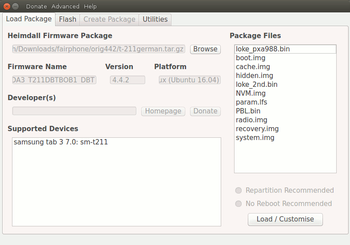
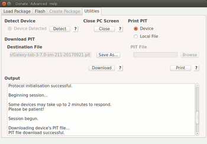
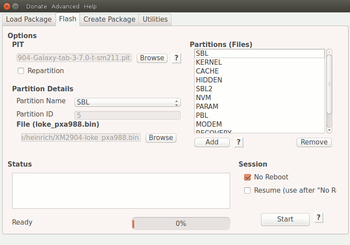
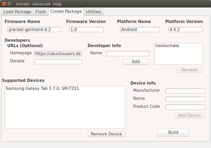

Heimdall
Dieser Artikel wurde für die folgenden Ubuntu-Versionen getestet:
Ubuntu 16.04 Xenial Xerus
Zum Verständnis dieses Artikels sind folgende Seiten hilfreich:
Heimdall  ist ein von der australischen Firma Glass Enchida
ist ein von der australischen Firma Glass Enchida  entwickeltes Werkzeug, um Samsung-Handys und Tablets mit Firmware (auch ROMs genannt) zu flashen, z.B. zum Debranding, Verwenden aktuellerer Android-Versionen, speziell angepasster ROMS oder "Rooten" von Geräten, aber auch zur Wiederherstellen des Ursprungszustand. Es stellt eine vollwertige Open-Source-Alternative zum "halboffiziellen" Windows-Programm Odin dar, und kann unter Linux, Mac oder Windows eingesetzt werden. Das Programm ist in Qt4 geschrieben, und bietet neben den Flashen auch die Möglichkeit, eigene Heimdall-Firmware-Pakete von Custom-ROMs oder einzelner Teile (z.B. recovery.img-Dateien) zu erstellen. Heimdall steht unter der MIT-Lizenz. Der Name 'Heimdall', eine nordische Gottheit und Wächter der Bifröst-Brücke, wurde in Analogie zu Odin, dem Namen des Samsung-Programms gewählt.
entwickeltes Werkzeug, um Samsung-Handys und Tablets mit Firmware (auch ROMs genannt) zu flashen, z.B. zum Debranding, Verwenden aktuellerer Android-Versionen, speziell angepasster ROMS oder "Rooten" von Geräten, aber auch zur Wiederherstellen des Ursprungszustand. Es stellt eine vollwertige Open-Source-Alternative zum "halboffiziellen" Windows-Programm Odin dar, und kann unter Linux, Mac oder Windows eingesetzt werden. Das Programm ist in Qt4 geschrieben, und bietet neben den Flashen auch die Möglichkeit, eigene Heimdall-Firmware-Pakete von Custom-ROMs oder einzelner Teile (z.B. recovery.img-Dateien) zu erstellen. Heimdall steht unter der MIT-Lizenz. Der Name 'Heimdall', eine nordische Gottheit und Wächter der Bifröst-Brücke, wurde in Analogie zu Odin, dem Namen des Samsung-Programms gewählt.
Das Programm ist nicht mit heimdal zu verwechseln, es besteht keinerlei Verbindung dazu!
Achtung!
Das Flashen stellt immer ein erhebliches potentielles Risiko dar! Daher vorher sehr genau prüfen, ob das gewählte ROM oder die Image-Dateien für das eigene Gerät geeignet sind; bei Fehlverwendung drohen ggf. schwerwiegende Schäden. Die Verwendung geschieht daher auf eigene Gefahr; mit dem Einsatz erlöschen z.B. die Garantieansprüche an den Geräte-Hersteller! Offizielle Software-Updates sind dann nicht mehr bzw. nur nach Herstellung des Ursprungszustand möglich. Der Entwickler lehnt jegliche Verantwortung und Haftung bei Problemen ab.
Funktionsweise¶
Heimdall verbindet sich über einen USB-Anschluss mit dem Gerät und interagiert mit der "Loke"-Software auf dem Gerät. Loke und Heimdall kommunizieren über das Samsung-eigene sogenannte "Odin-Protokoll", verwendet wird die Open-Source-Bibliothek libusbx . Das Programm kann mit einer Benutzeroberfläche oder als Kommandozeilenversion verwendet werden, ggf. sind Rootrechte[1] (wie in einigen anderen Anleitungen angegeben) zur Verwendung erforderlich, falls es ohne sie zu Problemen kommt.
Offiziell ist das Programm vom Entwickler für die Samsung-Geräte GT-I9000, GT-I9100[T], GT-I9300, GT-I9505, SGH-I727, SGH-I777, SGH-I927 und SGH-I797 getestet, es funktioniert aber für eine Vielzahl weiter Galaxy-Geräte; für diesen Artikel wurde beispielsweise ein Galaxy Tab 3 7.0 SM-T211 erfolgreich geflasht.
Heimdall wird vom Entwickler gegenüber Odin als sehr verlässlich und schnell beschrieben. Natürlich bestehen auch bei der Verwendung von Heimdall Risiken. So ist die kontinuierliche Stromversorgung des Rechners wie des Gerätes unabdingbar (nur bei vollem Akku einsetzen!). Neben versehentlicher Unterbrechung der USB-Verbindung und der Tatsache, dass einige Samsung-Geräte etwas unzuverlässige USB Control Software verwenden, treten die meisten Probleme aber durch Verwendung beschädigter USB-Ports oder schadhafter und/oder Billig-USB-Kabel auf. Fehlgeschlagenen Flash-Versuche, die in sogenannten "soft bricks" enden, lassen sich meist einfach reparieren, oft schon mit einem neuen Versuch. Sogenannte "hard bricks" (als Resultat eines Benutzer-Fehlers, wie z.B. durch das Flashen mit einem inkompatiblen Bootloader), sind technisch zwar meist auch wieder behebbar, allerdings oft nur mit erheblich höherem Aufwand, ggf. auch nur über zertifizierte Samsung-Fachwerkstätten.
Installation¶
Heimdall ist in den offiziellen Ubuntu-Quellen vorhanden. Folgende Pakete[2] werden benötigt:
heimdall-flash
heimdall-flash-frontend
 mit apturl
mit apturl
Paketliste zum Kopieren:
sudo apt-get install heimdall-flash heimdall-flash-frontend
sudo aptitude install heimdall-flash heimdall-flash-frontend
Bedienung¶
Achtung!
Vor jedem Einsatz von Heimdall sollte unbedingt ein komplettes Backup des Geräte-Dateisystems erstellt werden!
Der Rechner wird via USB-Kabel nach Aufruf des Download-Modus mit dem Samsung-Gerätes verbunden. Die Methode kann von Gerät zu Gerät unterschiedlich sein, beim getesteten Gerät wird er über das gleichzeitige Gedrückthalten der Power-, Volume-up- und Home-Taste am Gerät erreicht, diese müssen gehalten bis der erste Startbildschirm erscheint. Der Download-Modus kann, wenn adb installiert ist, auch über den undokumentierten adb-Befehl
adb reboot download
gestartet werden.

GUI¶
Die Benutzeroberfläche wird im Terminal [3] mit dem Befehl
heimdall-frontend
aufgerufen, ggf. mit vorgestellten gksu; eine andere Startmöglichkeit ist nicht vorgesehen.
In der sich öffnenden Oberfläche (in englischer Sprache) sind vier Reiter vorhanden: "Load Package" (ein bereits vorhandenes Heimdall-Firmware-Paket laden), "Flash", "Create Package" (ein Firmware-Paket erstellen), und "Utilities" (Werkzeuge).
Verwendung von Heimdall-Fimware-Paketen¶
Die einfachste Art, ein Gerät mit einer neuen Firmware zu versehen ist die Verwendung eines passenden Heimdall-Firmware-Packages, was man mit etwas Glück im Internet finden und herunterladen kann. Diese Pakete sind technisch betrachtet Archiv-Dateien (Endung .tar.gz), die aber nicht händisch entpackt werden. Im Reiter "Load Packages" unter Browse das Paket suchen, das Archiv wird dann automatisch entpackt, im Fenster werden die Daten angezeigt. Dabei genau überprüfen, ob das eigene Gerät unter "Supported Devices" aufgeführt ist, ansonsten den Vorgang sofort abbrechen! Im Fenster "Package Files" werden die verwendeten Dateien aufgelistet. Wenn alles in Ordnung ist, "Load/Customise" betätigen, damit wird in den "Flash"-Reiter gewechselt. Weiteres Vorgehen s.u. unter Flashen.

PIT¶
Um die GUI ohne ein fertiges Paket verwenden zu können, ist eine PIT-Datei (Partition Information Table) nötig, die die Informationen zu den zu verwendenden Partitionen und zugehörigen Dateinamen bereitstellt. Ggf. kann man auch diese im Internet finden und herunterladen; über "Browse" aufrufen, sie wird dann geladen.
Eine PIT-Datei lässt sich aber auch aus dem eigenen Gerät auslesen. Dazu in den Reiter "Utilities" wechseln, dann das Gerät im Download-Modus anschließen und über "Detect" aufrufen. Unter "Save as" den gewünschten Speicherort auswählen und einen Namen eingeben (z.B.den die Gerätekennung mit angehängtem Datumsformat, also etwas wie SM-T211(3G)20170922). Mit "Download" wird dann eine PIT-Datei erstellt und am angegebene Ort abgespeichert.
Über "PIT File -> Print" wird der Inhalt der Datei im "Output"-Fenster ausgegeben. Die zum Flashen relevanten Informationen zu den einzelnen Einträgen ("--- Entry #X ---") finden sich in den Zeilen Partition Name und Flash Filename, sie sind wichtig, wenn kein Heimdall-Paket greifbar ist, sondern andere Stock- oder Custom-ROMs verwendet werden sollen.
Verwenden anderer ROM-Dateien¶
Leider sind nur für wenige Samsung-Geräte Heimdall-Pakete greifbar. Es lassen sich aber auch für Odin konzipierte Archive einsetzen. Dazu müssen diese Archive (oft mit der Endung .tar.md5) in einen Ordner entpackt[4] werden, ebenso alle eventuell enthaltenen "Unterarchive". Falls das Packprogramm das Archiv-Format nicht erkennt, kann die Datei schlicht umbenannt und dabei die .md5-Endung entfernt werden.
Die einzelnen Dateien werden dann im "Flash"-Fenster händisch der passenden Partition zugeordnet (Informationen zur richtigen Zuordnung liefert die PIT-Datei, siehe oben). So lässt sich mit der passenden Original-Firmware auch wieder der Ursprungszustand herstellen (wichtig ggf. für Garantieleistungen,). Eventuell in den Archiven vorhandene CSC-Codes  sollten dabei zuletzt entpackt werden. Eine Datei SS_DL.dll-Datei kann ignoriert werden, sie enthält Steuerungsanweisungen für Odin.
sollten dabei zuletzt entpackt werden. Eine Datei SS_DL.dll-Datei kann ignoriert werden, sie enthält Steuerungsanweisungen für Odin.

Flashen¶
Das eigentliche Flashen wird im Reiter "Flash" durchgeführt. Die verwendeten Dateien werden bei Einsatz eines Heimdall-Firmware-Pakets direkt angezeigt, bei anderen ROMS müssen sie einzeln aufgerufen und eingefügt werden. Dazu unter "Partition Details" die zu verwendenden Partitionsnamen im Dropdown-Menü unter "Partition Name" auswählen, über "Browse" die passende Datei aus dem entpackten Archiv zuordnen und mit "Add" (unter dem "Partition (files)"-Fenster) bestätigen; diesen Vorgang für alle verfügbaren Dateien des ROMs wiederholen. Dabei ist größte Sorgfalt vonnöten, damit es zu keinen Fehlzuordnungen kommt! Eine ggf. falsch zugeordnete Partition kann aber im Fenster per  -Klick ausgewählt und mit der "Remove"-Schaltfläche wieder entfernt werden.
-Klick ausgewählt und mit der "Remove"-Schaltfläche wieder entfernt werden.
Die Checkbox "Repartion" sollte nur aktiviert werden, wenn tatsächlich eine neue PIT erstellt werden soll; das führte allerdings in jedem Fall zu einem vollständigen Löschen aller Daten!
"No Reboot" kann verwendet werden, wenn das Gerät nach Beenden des Flash-Vorgangs nicht direkt neu gebootet werden soll, sondern z.B. zunächst im Recovery-Modus weitere Veränderungen (Entpacken von SuperUser-Apps o.ä.) vorgenommen werden soll. Die weiter Option "Resume (use after No Reboot)" kann mit der ersten gemeinsam verwendet werden, wenn direkt aus Heimdall heraus weitere Flash-Vorgänge vorgenommen werden sollen.
Wenn nötig, können hier noch Veränderungen an den Dateizuordnungen vorgenommen werden (z.B. wenn einem Standard-Rom eine anderer Recovery-Methode zugefügt werden soll). Allerdings sollte man genau wissen, was man tut, wenn man Image-Dateien bearbeitet, oder Dateien aus unterschiedlichen ROMs "mischt"! Partitionen, die nicht angegeben werden, bleiben unverändert erhalten.
Der eigentliche Flash-Vorgang wird dann mit Starttaste ausgelöst; im Statusfenster kann man den Fortschritt beobachten; ggf. werden Fehlermeldungen o.ä. ausgegeben. Nach Abschluss startet das Gerät im Regelfall von selbst mit der neu installierten Firmware.

Eigene Heimdall-Firmware-Pakete erstellen¶
Neben dem Flashen kann auch ein eigenes Firmware-Paket erstellt werden. Der entsprechende Reiter "Create Package" ist erreichbar, sobald im Flash-Reiter mindestens eine Partition eingefügt wurde. Dort müssen die Angaben zum "Firmware Name", "Firmware Version", "Platform Name", und "Platform Version" gemacht werden. Die Angabe eines Namens in "Developer Info" ist ebenfalls nötig. Besonders sorgfältig sollten die Angeben zu "Device Info" gemacht werden, damit eindeutig ist, für welche Geräte das Paket verwendbar ist. Die Angabe einer Webseiten hingegen ist optional.
Die "Build"-Schaltfläche wird erst nutzbar, wenn alle geforderten Eingaben gemacht wurden. Heimdall erstellt dann eine Archivdatei, die neben den verwendeten Dateien auch eine zum Gerät passende PIT-Datei und eine firmware.xml-Datei enthält, die Informationen zu den Dateien des Pakets enthält.
Kommandozeilenversion¶
Wesentlich schneller ist die Verwendung von Heimdall als Kommandozeilenwerkzeug, da z.B. nicht extra eine PIT-Datei erzeugt werden muss. Die allgemeine Syntax sieht so aus:
heimdall BEFEHL --OPTION
| Heimdall Kommandozeilenversion | ||
| Befehl | mögliche Optionen | Funktion |
close-pc-screen | --no-reboot, --resume | "connect phone to PC"-Bildschirmmeldung verhindern |
detect | Gibt aus, ob ein Gerät im Download-Modul erreichbar ist oder nicht. | |
flash | --PARTITIONSNAME DATEINAME ..., --PARTITIONS-IDENTIFIER DATEINAME ..., --pit DATEINAME, --no-reboot, --resume | Flasht eine oder mehrere Firmware-Dateien auf das Gerät. Partitionsnamen (oder Identifiers) können durch Ausführen des print-pit-Befehls in Erfahrung gebracht werden. Wenn --repartition gewählt wurde, muss eine PIT-Datei angegeben werden, außerdem ist es besonders wichtig, dass alle verfügbaren Dateien angegeben werden, da das ganze System gelöscht wird und nicht auf bereits vorhandene Partitionen zurückgegriffen werden kann. |
oder: --repartition --pit DATEINAME, --PARTITIONSNAME DATEINAME ..., --PARTITIONS-IDENTIFIER DATEINAME ..., --no-reboot, --resume | ||
print-pit | --file DATEINAME, --no-reboot | Gibt den Inhalt einer PIT-Datei in lesbarem Format aus. Ohne Dateinamen bezieht Heimdall die PIT-Datei aus dem angeschlossenen Gerät. |
Wenn die Option --no-reboot verwendet wird, bleibt das angeschlossenen Gerät im Download-Modus; weitere Aktionen müssen dann mit der --resume-Option verwendet werden. Ein manuelles Ausführen eines Reboots ist aber auch nach Angabe der --no-reboot-Option gefahrlos möglich.
Zusätzlich sind für die angegebenen Befehle die Optionen --verbose, --stdout-errors und --usb-log-level <none/error/warning/debug> verwendbar, um zusätzliche Informationen zu erhalten, Fehler auszugeben und das USB-Log-Level festzulegen.
Rooten¶
Um ein Gerät zu Rooten, muss auf dem Rechner eine für das Gerät passende Wartungsmodus-Datei (recovery.img) entpackt vorliegen, z.B. von TWRP . Nach Anschluss des Gerätes im Download-Modus und Wechsel in das entsprechende Verzeichnis reicht der Befehl
heimdall flash --RECOVERY recovery.img --no-reboot
um den neuen Wartungsmodus zu installieren. Dann das Gerät in dem - jetzt neu erstellten - Recovery-Modus starten und darüber die entsprechende SuperUser-Datei/App installieren.
Hilfe und Information¶
Das Programm beinhaltet keine manpage; eine ausführliche Beschreibung in englischer Sprache ist aber in der Datei /usr/share/doc/heimdall-flash/README.gz vorhanden; alternativ auch online abrufbar.
Für die Kommandozeilenversion liefert
heimdall help
eine Übersicht über die verwendbaren Optionen, der Befehl heimdall info gibt Näheres zu dem Projekt aus, heimdall version die Versionsnummer.
Alternativen¶
Mit adb und fastboot aus dem Android SDK lassen sich ebenfalls Android-Geräte warten und flashen, QtADB ist eine grafische Oberfläche für die beiden genannten Programmen, mit einigen Mehrfunktionen.
Unter Linux kann ggf. Odin unter Wine verwendet werden, Bewertungen auf winehq.org .
Das offizielle Samsung-Programm Kies scheint unter Wine allerdings nicht verwendbar zu sein (siehe diese Bewertungen auf winehq.org).
Links¶
Heimdall
auf githubFlashen mit Linux Heimdall
- Beitrag auf androidpit.deHow to flash a recovery image using Heimdall
- ausführlicher Blogbeitrag zur NutzungVideo-Tutorial
auf youtube.comSamMobile
Quelle für z.B. etliche Samsung-"Stock"-ROMs, mit denen Handys wieder in der Ursprungszustand versetzt werden können - zum Download ist eine kostenlose Registrierung notwendig!xda-developers
- Großes Portal rund um Handy, PDAs etc. pp., Quelle für etliche Custom-ROMs
- Erstellt mit Inyoka
-
 2004 – 2017 ubuntuusers.de • Einige Rechte vorbehalten
2004 – 2017 ubuntuusers.de • Einige Rechte vorbehalten
Lizenz • Kontakt • Datenschutz • Impressum • Serverstatus -
Serverhousing gespendet von